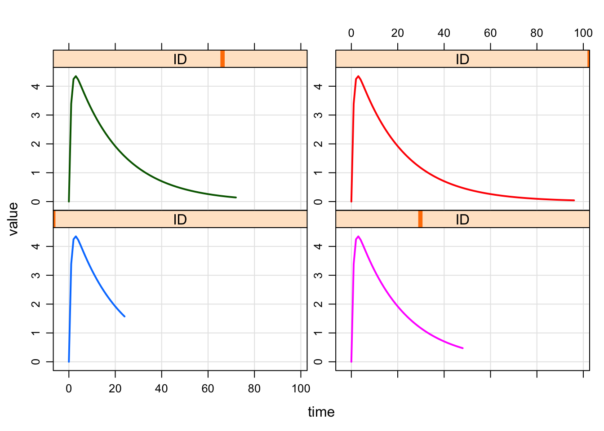
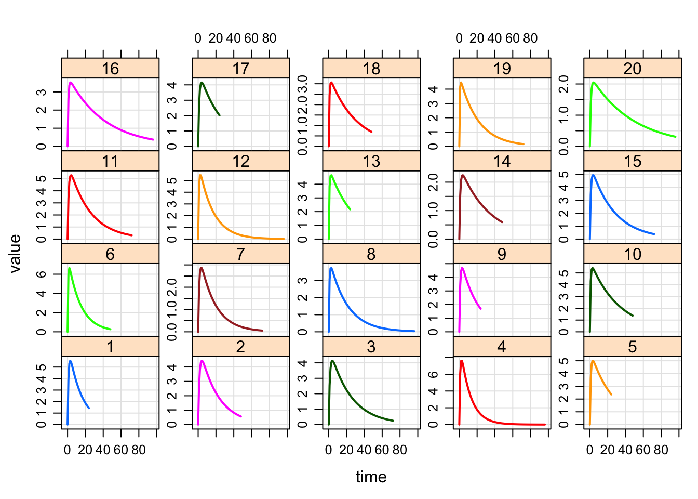

Design lists help you assign different designs to different groups in a population or specific designs to specific individuals.
library(mrgsolve)
library(dplyr)Assign designs to individuals
To illustrate, let’s make a population of 4 individuals, all with different simulation end times.
des <- data_frame(ID=1:4, end=seq(24,96,24))
des. # A tibble: 4 × 2
. ID end
. <int> <dbl>
. 1 1 24
. 2 2 48
. 3 3 72
. 4 4 96For simplicity, we will only vary the simulation end time in this example. See later examples where start, delta and add can varied as well.
We can turn this in to a list of designs with as_deslist.
as_deslist(des, descol="ID"). $ID_1
. start: 0 end: 24 delta: 1 offset: 0 min: 0 max: 24
.
. $ID_2
. start: 0 end: 48 delta: 1 offset: 0 min: 0 max: 48
.
. $ID_3
. start: 0 end: 72 delta: 1 offset: 0 min: 0 max: 72
.
. $ID_4
. start: 0 end: 96 delta: 1 offset: 0 min: 0 max: 96
.
. attr(,"descol")
. [1] "ID"as_deslist returns one design for each individual, one for each unique level of descol. The deslist is a list of tgrid objects (see ?tgrid). Note also that descol is retained as an attribute to be used later.
Let’s set up a simulation that includes these 4 IDs; we load a model and, importantly, set up an idata_set for the simulation that includes all 4 IDs in the design list.
mod <- mrgsolve:::house() %>% ev(amt=100)
idata <- select(des,ID)
idata. # A tibble: 4 × 1
. ID
. <int>
. 1 1
. 2 2
. 3 3
. 4 4des1 <- as_deslist(des,"ID")When we run the simulation, pass in the design list to design in the pipeline
out <-
mod %>%
idata_set(idata) %>%
design(des1) %>%
mrgsimWe see that ID 1 has a 24 hour end time, ID 2 has 48 hour simulation time, ID 3 with 72 hour simulation time, and ID 4 96 hour simulation time as reflected in the list of the designs.
plot(out, CP~time|ID)
Note: Check the arguments to design (?design). There is a descol argument that is required. descol in this function refers to a column in idata_set to be used as the grouping variable to assign the sampling design. as_deslist also had a descol argument that referred to a column in the input data frame for that function. We don’t need to pass descol to design() because we created the design list with as_deslist: design() reads descol from the attribute. We don’t have to use as_deslist to create the design list. It could be just a plan old R list created by you with tgrid objects. In that case, you must state what descol is when you call design().
And it can’t be emphasized enough here that you MUST use an idata_set for this to work and idata_set must contain a valid descol.
Assign designs to treatment arms or groups
Now, let’s simulate a trial with 5 patients in each of 4 treatment arms. In this trial, arm 1 lasts 24 hours, arm 2 last 48 hours … etc. But every patient with the arm 1 indicator will get simulated for 24 hours, every patient with arm 2 indicator will get simulated for 48 hours and so on.
idata <- expand.idata(ARM=1:4,ID=1:5)
head(idata). ID ARM
. 1 1 1
. 2 2 2
. 3 3 3
. 4 4 4
. 5 5 1
. 6 6 2Now, let’s setup the designs based on ARM rather than ID
des <- distinct(idata,ARM) %>% mutate(end=seq(24,96,24))
des. ARM end
. 1 1 24
. 2 2 48
. 3 3 72
. 4 4 96The simulation works the same way
set.seed(11)
out <-
mod %>%
idata_set(idata) %>%
omat(dmat(1,1,1,1)/10) %>%
design(as_deslist(des,"ARM")) %>%
mrgsim(carry.out="ARM")
plot(out, CP~time|factor(ARM))
plot(out, CP~time|factor(ID))
list-cols and additional times
Hopefully it’s clear that columns named start, end, and delta in the the input data frame passed to as_deslist are just numeric values that form the time grid object (see ?tgrid).
What about add, the vector of ad-hoc times for the simulation? These, too, can be accommodated with a list-col column in the input data frame. Note that list-cols are only really supported in specialized tibble type data frames.
These are random times for IDs 1 and 2
set.seed(12)
t1 <- c(0,sample(1:24,12))
t2 <- c(0,sample(1:96,12))
t1. [1] 0 2 19 21 6 4 1 20 11 23 16 22 17t2. [1] 0 37 96 25 41 43 50 60 11 20 69 9 61Note: When we simulate with end < 0, mrgsolve knows to ignore start/end/delta and only use the times in add for observations.
des <- data_frame(ID=1:2, end=-1, add=list(t1,t2))
des. # A tibble: 2 × 3
. ID end add
. <int> <dbl> <list>
. 1 1 -1 <dbl [13]>
. 2 2 -1 <dbl [13]>mod %>%
idata_set(des, select=ID) %>%
design(as_deslist(des)) %>%
mrgsim %>%
plot(CP~time|factor(ID), type='b')
Ok … not the most lovely-looking result we’ve seen before, but maybe that’s just what you needed in this simulation.